petroglyph, n. An image created by removing part of a rock surface by incising, picking, carving, or abrading, as a form of rock art. The term generally refers to rock engravings of ancient origin, often associated with prehistoric peoples. (Wikipedia contributors 2024)
retroglyph reconstructs individual patient data from published Kaplan-Meier curve images. Relative to other Kaplan-Meier reconstruction tools, it excels at untangling egregiously overplotted Kaplan-Meier curves, and the digitization phase achieves a high level of pixel precision.1
Installation
To install the latest release version of retroglyph, open R and run:
install.packages("pak")
pak::pak("wlandau/retroglyph@*release")To install the development version of retroglyph:
pak::pak("wlandau/retroglyph")App usage
The retro_app() function runs a Shiny app that lets you upload and process Kaplan-Meier images interactively. Simply upload an image and prompt the model to reconstruct the data.
|
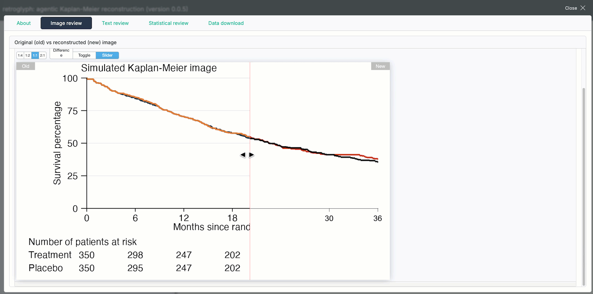 Upload a Kaplan-Meier image. |
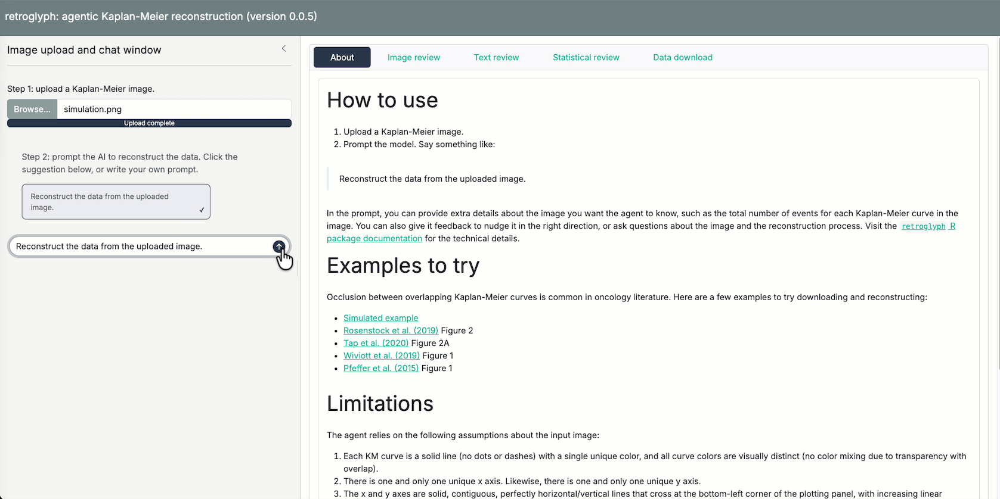 Prompt the model to reconstruct the data. |
|
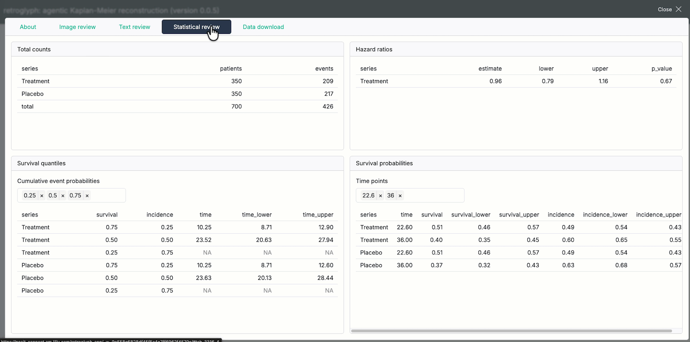 Review the risk table and reconstructed survival statistics. |
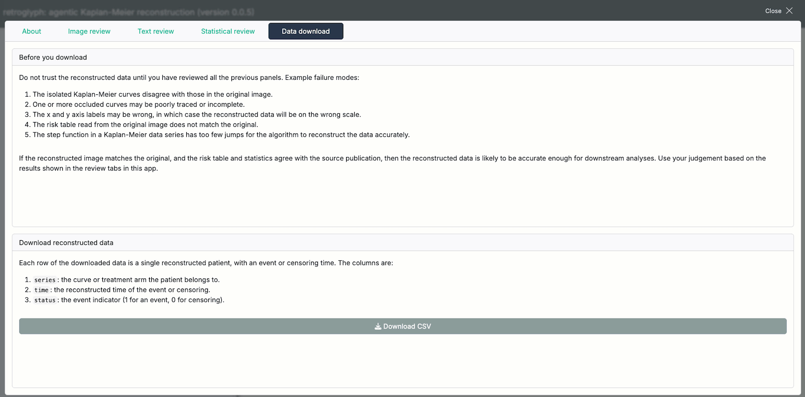 Download the results. |
Package usage
This section shows how to run retroglyph programmatically, which is useful for batch processing many images or building a custom web app of your own.
Run the agent.
Start by creating an ellmer chat object chat object with no registered tools and no system prompt.
library(retroglyph)
chat <- ellmer::chat_anthropic(model = "sonnet", echo = "output")Next, create a retroglyph agent object.
agent <- retro_agent(chat)Supply a Kaplan-Meier image file, with either survival probability or percentage of events on the vertical axis. The following example uses a simulated Kaplan-Meier image, generated by the script at system.file("simulation", "simulation.R", package = "retroglyph"). The treatment curve severely occludes the placebo curve, which often happens in oncology literature, e.g. Rosenstock et al. (2019) Figure 2, Tap et al. (2020) Figure 2A, Wiviott et al. (2019) Figure 1, and Pfeffer et al. (2015) Figure 1. Occlusion usually makes it difficult to reconstruct the underlying data, but retroglyph handles it easily using a novel Dijkstra-based path tracing algorithm (see “How retroglyph reconstructs data” later on).
source <- system.file("simulation.png", package = "retroglyph")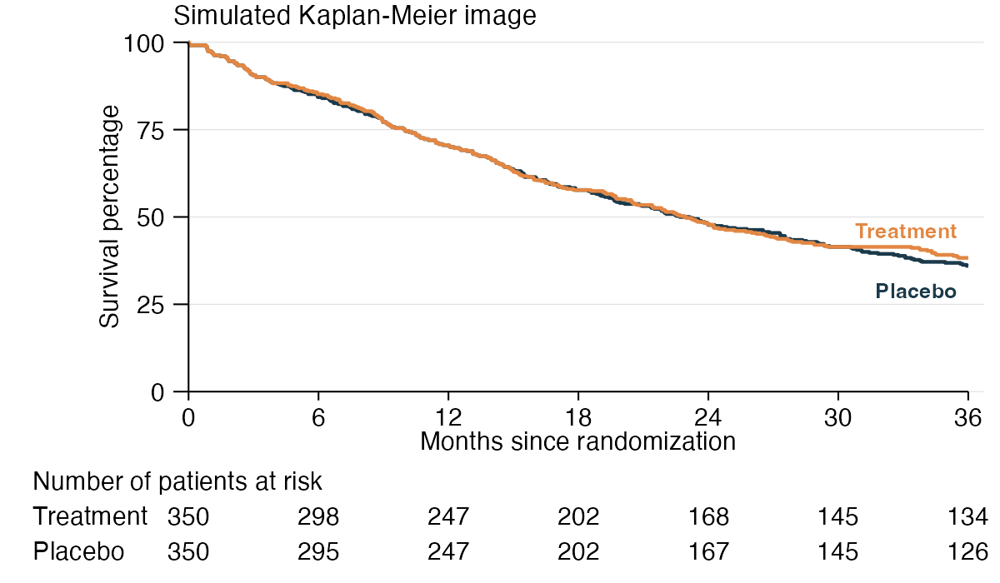
Call reconstruct() on the image path. The agent calls the visual language model on tools that reconstruct the data.
agent$reconstruct(source)reconstruct() accepts an optional prompt argument for anything you know that the image does not show. The most useful thing to put there is each Kaplan-Meier series’ total number of events, which publications often report in the text rather than in the figure. The agent is instructed to trust a number you state over anything it reads off the image, and a total event count sharpens the estimated censoring at the end of each series’ follow-up.
agent$reconstruct(
source,
prompt = paste(
"The publication reports the total number of events",
"in each Kaplan-Meier series.",
"Fill in the counts it gives for the series in this figure."
)
)Only state a total you actually have. A wrong total is worse than none, because it shifts the estimated censoring at the end of follow-up, and the agent is instructed never to guess one (in particular, never to derive one by counting censoring tick marks).
Alternatively, you can register the image separately and then use the chat to kick of the reconstruction process. This is useful if you are building a web app on top of retroglyph.
agent$register(source)
agent$chat$chat("Reconstruct the registered image.")Accessing results
Methods in the agent object allow you to access results. Do not trust those results until you have reviewed the reconstructed image and risk table (see the next sections).
The data() method shows survival data reconstructed using the IPDfromKM R package, from the image’s risk table.
agent$data()
#> # A tibble: 700 × 3
#> series time status
#> <chr> <dbl> <int>
#> 1 Treatment 0.288 1
#> 2 Treatment 0.327 1
#> 3 Treatment 0.327 1
#> 4 Treatment 0.327 1
#> 5 Treatment 0.827 1
#> 6 Treatment 0.865 1
#> 7 Treatment 0.865 1
#> 8 Treatment 0.904 1
#> 9 Treatment 0.904 1
#> 10 Treatment 1.13 1
#> # ℹ 690 more rows
#> # ℹ Use `print(n = ...)` to see more rowsThe legend marks the reference series (usually the control group in a controlled study) with a TRUE in the reference column.
agent$legend()
#> # A tibble: 2 × 3
#> series color reference
#> <chr> <chr> <lgl>
#> 1 Treatment chocolate3 FALSE
#> 2 Placebo gray13 TRUEAt this point, you can run your own survival model on the reconstructed data with the survival time and censoring status of each patient.
Interactive review
You as the user are responsible for reviewing the image processing results of retroglyph and determining if the reconstruction is adequate. Example failure modes are:
- The isolated Kaplan-Meier curves disagree with those in the original image.
- One or more occluded curves may be poorly traced or incomplete.
- The x and y axis labels may be wrong, in which case the reconstructed data will be on the wrong scale.
- The risk table read from the original image does not match the original.
- The step function in a Kaplan-Meier data series has too few jumps for the algorithm by Guyot et al. (2012) (
IPDfromKMR package) to reconstruct the data accurately.
The compare() method lets you check for these and other issues that the automated processing may have missed. For each reconstructed patient-level survival curve, compare(data = "survival") (default) refits the reconstructed survival data using survival::survfit() to derive the Kaplan-Meier step function, then redraws it on a blank canvas with the same axes as the original image. After it redraws all the curves and axes, it launches an HTML widget to compare the resulting reconstructed image against the target image.2 If the curves in the two figures match, then the reconstruction was successful. Matches are generally better for denser curves with more points, and worse for sparse curves with few points3.
agent$compare(front = 2)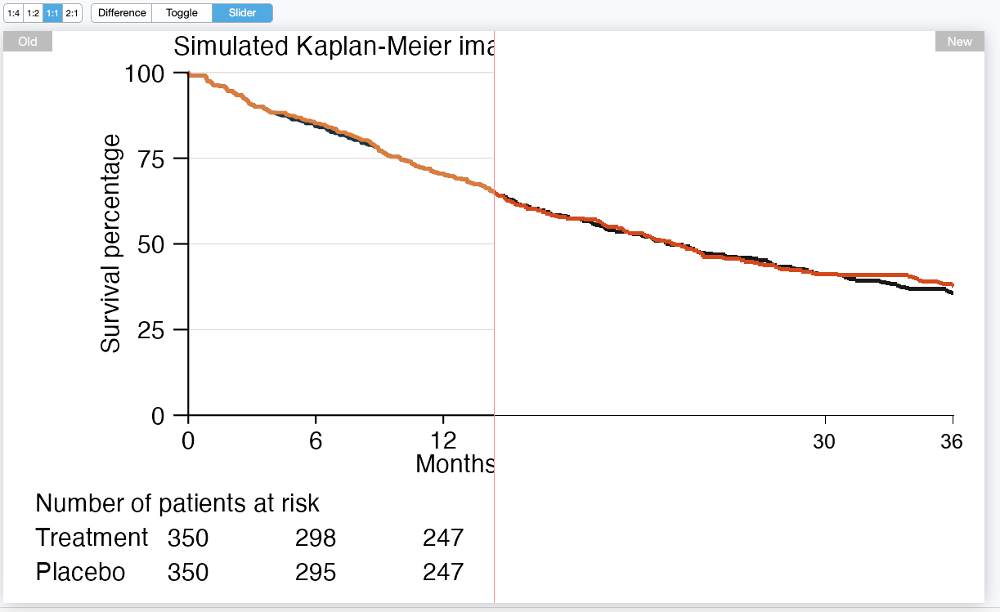
The compare() method supports a front argument to choose which curve to bring to the foreground. This helps confirm that occluded curves were traced correctly. In the following example, we bring the blue placebo curve to the foreground and verify that the agent overcame the overplotting in the original image.
agent$compare(front = 1)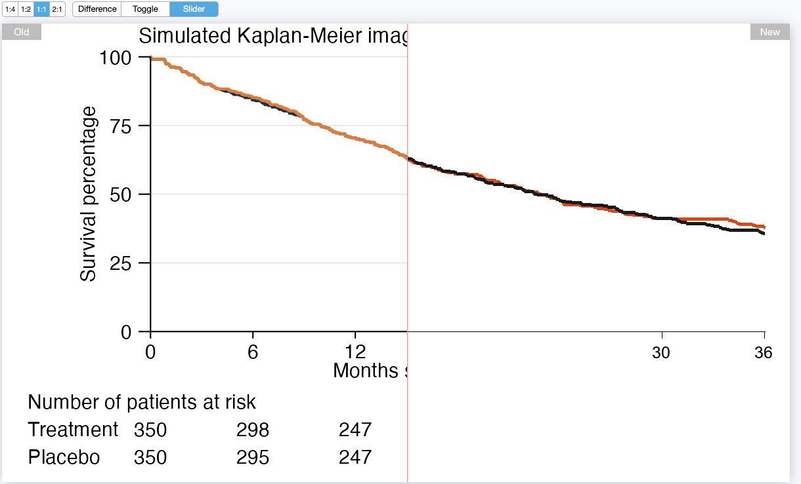
The risk_table() method shows the risk table the model read from the source image. The risk table is an important input for reconstructing individual patient survival data, so please review it to ensure the model read it correctly. The model reads these numbers off the source image visually, and only you can catch a misread digit. If the reconstructed risk table matches the one from the source image, and if agent$compare() showed good agreement with the source, then the reconstructed data from agent$data() is likely to be accurate.
agent$risk_table(mode = "transposed")
#> # A tibble: 2 × 8
#> series `0` `6` `12` `18` `24` `30` `36`
#> <chr> <int> <int> <int> <int> <int> <int> <int>
#> 1 Treatment 350 298 247 202 168 145 134
#> 2 Placebo 350 295 247 202 167 145 126If the agent recorded a total number of events for any series, events_table() shows it. This one is optional, so NULL here just means no series reported a total, not that anything went wrong. Review it when it is present: it is a number the model either read off the image or took from your prompt, and it changes the reconstruction by sharpening the estimated censoring at the end of each series’ follow-up.
agent$events_table()
#> NULLIt is also good practice to check the hazard ratios and Kaplan-Meier quantiles of the reconstructed data against those reported in the original publication. The hazard_ratios() method estimates hazard ratio of each series relative to the reference series using a simple proportional hazards model.
agent$hazard_ratios()
#> # A tibble: 1 × 5
#> series estimate lower upper p_value
#> <chr> <dbl> <dbl> <dbl> <dbl>
#> 1 Treatment 0.961 0.797 1.16 0.671The quantiles() and probabilities() methods quantify regions of the estimated survival distribution. quantiles() estimates the time points corresponding to a user-supplied set of survival (or optionally, incidence) probabilities, and probabilities() estimates the survival and incidence probabilities corresponding to a user-supplied set of time points. Confidence intervals are also available for both methods.
agent$quantiles(probabilities = c(0.5, 0.9))
#> # A tibble: 4 × 6
#> series survival incidence time time_lower time_upper
#> <chr> <dbl> <dbl> <dbl> <dbl> <dbl>
#> 1 Treatment 0.9 0.1 3.35 2.63 5.37
#> 2 Treatment 0.5 0.5 22.8 19.9 26.8
#> 3 Placebo 0.9 0.1 3.35 2.63 4.87
#> 4 Placebo 0.5 0.5 22.6 19.6 27.4
agent$probabilities(quantiles = c(3, 22))
#> # A tibble: 4 × 8
#> series time survival survival_lower survival_upper incidence incidence_lower incidence_upper
#> <chr> <dbl> <dbl> <dbl> <dbl> <dbl> <dbl> <dbl>
#> 1 Treatment 3 0.906 0.876 0.937 0.0943 0.124 0.063
#> 2 Treatment 22 0.514 0.465 0.569 0.486 0.535 0.431
#> 3 Placebo 3 0.906 0.876 0.937 0.0943 0.124 0.063
#> 4 Placebo 22 0.509 0.459 0.564 0.491 0.541 0.436Batch processing
If you call reconstruct() on many images as part of a batch processing pipeline, you can use the export method to save the comparison widgets and results for each image. The workflow could look something like this:
library(retroglyph)
agent <- ellmer::chat_anthropic(model = "sonnet") |>
retro_agent()
for (image in images) {
agent$reconstruct(image)
agent$export(fs::path_ext_set(image, ""))
}export() saves the data and comparison widgets for a given image. Example:
agent$export("simulation", quantiles = c(3, 22))
fs::dir_tree("simulation")
#> simulation
#> ├── compare
#> │ ├── placebo_gray13.html
#> │ └── treatment_chocolate3.html
#> └── data
#> ├── counts.csv
#> ├── data.csv
#> ├── hazard_ratios.csv
#> ├── probabilities.csv
#> ├── quantiles.csv
#> └── risk_table.csvThe files in simulation/compare/ are HTML widgets generated by agent$compare().
-
treatment_chocolate3.html: a reconstructed image with the treatment curve shown as thechocolate3color in the foreground. -
placebo_gray13.html: a reconstructed image with the Placebo curve shown as thegray13color in the foreground.
The data in simulation/data/ are CSV files generated by agent$data(), agent$hazard_ratios(), agent$probabilities(), agent$quantiles(), agent$risk_table(), and agent$events_table().
-
data.csv: reconstructed individual patient data, with survival time and censoring status for each patient. -
events_table.csv: the total number of events in each series, when the agent recorded any. -
hazard_ratios.csv: the hazard ratio of each series relative to the reference series. -
probabilities.csv: reconstructed individual patient data, with survival probabilities at specified time points (quantiles). -
quantiles.csv: Kaplan-Meier survival quantiles (e.g. median survival) for each series. -
risk_table.csv: the risk table read from the original image.
Remarks:
- The reference series is identified in the legend by the
referencecolumn (TRUEfor that series). Hazard ratios are computed relative to it; when the curves do not represent treatment arms, this is simply the denominator for the ratio. - Every image must have a risk table (see Limitations). If the model determines the source image has none, it stops before calling the distill or data tools, and none of these files are produced.
- Total events, by contrast, is optional.
events_table.csvis simply absent when no series reported a total, which is common and not an error.
How retroglyph reconstructs data
The reconstruct() method prompts the model to run four agent tools in the following order. Within each tool, retroglyph divides the work among the visual language model and hard-coded tools, each according to their respective strengths. The model makes high-level judgment calls during the pipeline, and hard-coded tools compute precise answers once those judgment calls are made.
-
The “Quantize” tool. The model calls this tool first, before anything else, and exactly once: it takes no arguments, so a second call would return an identical result. It reduces the source image to at most 256 colors using
magick::image_quantize()and returns the quantized image. The model reads color codes for the distill tool’s color arguments by eye from this simplified image, rather than from the full-color original.
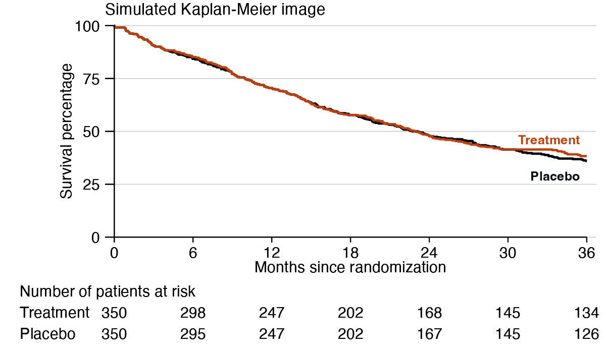
-
The “Label” tool. The model calls this tool second, right after quantize, and exactly once: it takes no arguments and always runs with the same fixed OCR settings, so a second call would return an identical result. It returns one image: a grayscale annotated copy of the source with set-of-mark labels, a technique called set-of-mark prompting. The
tesseractpackage uses OCR to detect the positions of numbers in the image4, and then themagickpackage marks those numbers with letter labels and bounding boxes. As soon as it sees the source image, the model checks whether it has a risk table (see Limitations). Every image is required to have one, and the model stops immediately, without calling any other tool, if it does not.
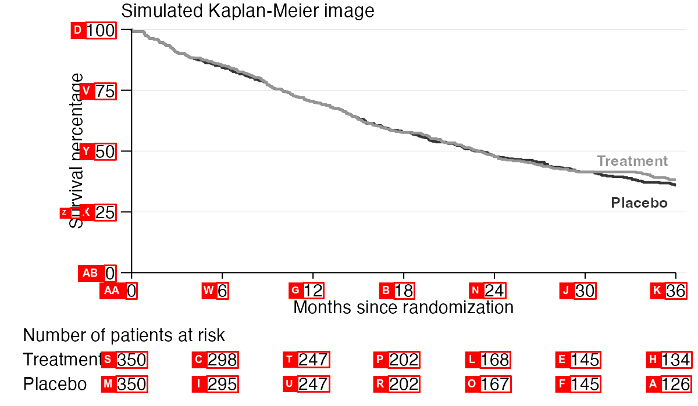
-
The “Distill” tool. This tool reduces the image to nothing but its Kaplan-Meier curves on a flat background. The processing steps are as follows:
-
Panel isolation: Using the annotated image from the previous tool, the visual language model selects two tick labels for each axis and reads their numeric values. The values and locations of the tick labels define the plotting scales. Using those scales, the tool locates the origin, searches and detects the axis lines in a small region around the origin, and erases the plotting panel border lines/axes and everything outside them.
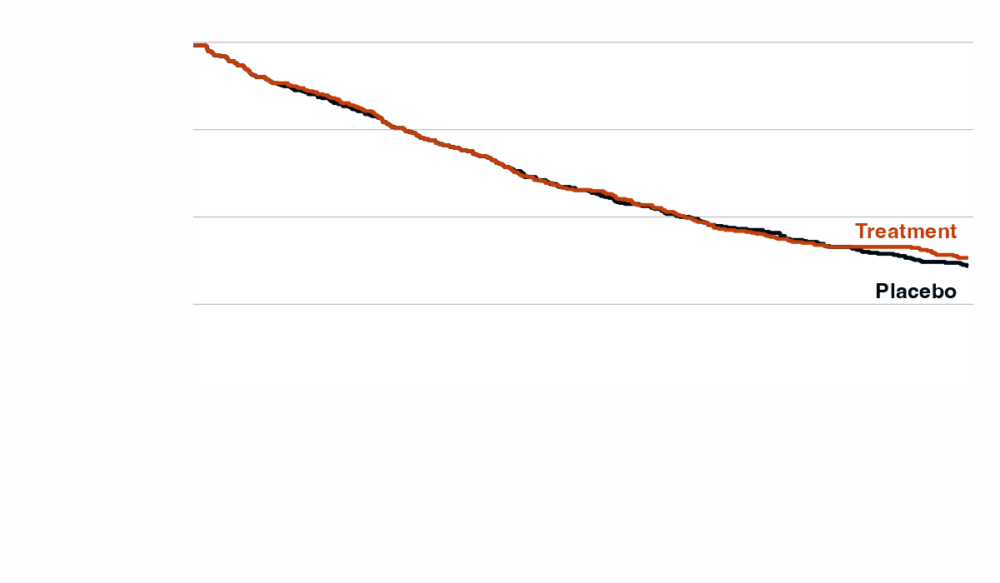
-
Curve isolation: The visual language model supplies the tool with color codes for the various elements of the image: the background color, a list of garbage colors for undesired elements, and one color per Kaplan-Meier curve.
magick::image_map()maps each pixel’s color to the nearest color in the model-supplied palette, and then garbage colors are assigned to background. Finally, the tool removes any connected components that are too short to be Kaplan-Meier curves, such as legend keys and text fragments. The result is a distilled image with only the Kaplan-Meier curves on a flat background:
-
Panel isolation: Using the annotated image from the previous tool, the visual language model selects two tick labels for each axis and reads their numeric values. The values and locations of the tick labels define the plotting scales. Using those scales, the tool locates the origin, searches and detects the axis lines in a small region around the origin, and erases the plotting panel border lines/axes and everything outside them.
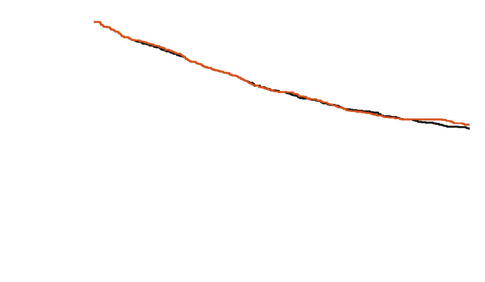
-
The “Data” tool. This tool converts the isolated curves into patient-level survival data. Processing steps:
-
Curve disentanglement: plotted Kaplan-Meier curves often overlap and occlude one another. To reconstruct a full curve, this step traces a path that connects visible pixels through occluded ones.
-
Adjacency graph: First, the tool builds an adjacency graph where each Kaplan-Meier pixel is a vertex connected to all its adjacent non-background neighbors. The edges connecting adjacent pixels have numeric weights. We give small weights to edges between pixels on the target curve, large weights to edges between pixels on non-target curves, and intermediate weights to edges between a target and non-target pixel. The adjacency graph pictorially resembles the contents of the magnifying glass in the following image, which assumes we are targeting the blue curve:
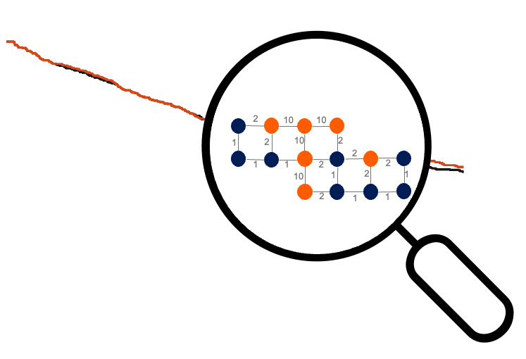
- Endpoints: Next, for the target curve, we identify the leftmost and rightmost pixels as the start and end vertices of the path, taking care to ignore small anti-aliasing artifacts when detecting the rightmost pixel.
-
Shortest path: Dijkstra’s shortest path algorithm finds the shortest path between these endpoints through the graph, which is the most likely path that the target curve would have shown in the absence of overplotting:
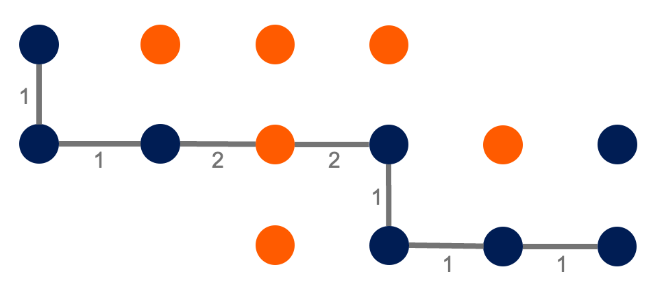
-
Line centering: Finally, to counteract bias from the line width, a light touch of image morphology tweaks local regions of the line to more accurately trace the middle of the original curve5. Whereas the Dijkstra’s path tends to “hug the turns” of the foreground mask of Kaplan-Meier ink, the line centering step shifts the path to more accurately trace the middle of the original curve.
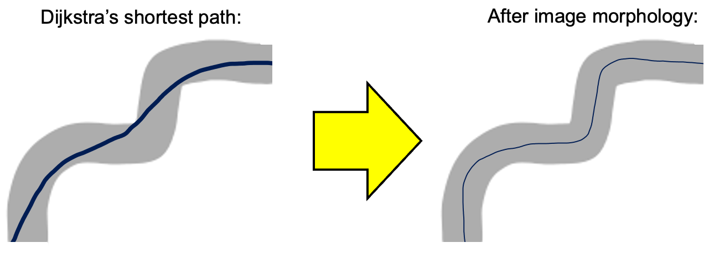
-
Adjacency graph: First, the tool builds an adjacency graph where each Kaplan-Meier pixel is a vertex connected to all its adjacent non-background neighbors. The edges connecting adjacent pixels have numeric weights. We give small weights to edges between pixels on the target curve, large weights to edges between pixels on non-target curves, and intermediate weights to edges between a target and non-target pixel. The adjacency graph pictorially resembles the contents of the magnifying glass in the following image, which assumes we are targeting the blue curve:
-
Data reconstruction: After resolving overplotting, the tool supplies the skeletonized curve traces and the model-supplied risk table values (read from the source image) to the
IPDfromKMR package. TheIPDfromKMpackage uses the algorithm by Guyot et al. (2012) to reconstruct individual patient survival data from the Kaplan-Meier pixel traces and the risk table. If a series’ total number of events is also available - either stated in yourpromptor printed in the figure - the tool passes that along too, which sharpens the estimated censoring at the end of that series’ follow-up.
-
Curve disentanglement: plotted Kaplan-Meier curves often overlap and occlude one another. To reconstruct a full curve, this step traces a path that connects visible pixels through occluded ones.
Limitations
The agent relies on the following assumptions about the input image:
- Each KM curve is a solid line (no dots or dashes) with a single unique color, and all curve colors are visually distinct (no color mixing due to transparency with overlap).
- There is one and only one unique x axis. Likewise, there is one and only one unique y axis.
- The x and y axes are solid, contiguous, perfectly horizontal/vertical lines that cross at the bottom-left corner of the plotting panel, with increasing linear scales.
- The y axis is survival or cumulative incidence, on a probability or percentage scale.
- The image must contain a risk table.
- The image text must be clear and detailed enough for OCR to read the axis tick labels and risk table. This requires high enough resolution and large enough font.
Most published Kaplan-Meier images satisfy all these assumptions.
Troubleshooting
If data reconstruction fails, a retry in a fresh session often fixes the issue because the underlying visual language model is stochastic. If the error is persistent and you believe retroglyph should be able to support the image, please file an issue and share details that help with troubleshooting (the image, the error message, etc).
Related work
Reconstructing individual patient data from Kaplan-Meier curves is a well-established need in meta-analysis. The foundational algorithm by Guyot et al. (2012) extracts coordinates from digitized curves and combines them with published at-risk tables to reconstruct time-to-event data. Tools like WebPlotDigitizer and xyscan assist with the manual digitization step, requiring users to click on curve coordinates by hand.
More recently, Zhao et al. (2025) (KM-GPT) demonstrated a fully automated pipeline using OpenAI’s GPT models to extract coordinates directly from Kaplan-Meier images. It uses the visual language models and OCR to interpret Kaplan-Meier-specific features of images, and it uses a classic K-medoids-based algorithm to isolate and find paths.
Code of Conduct
Please note that the retroglyph project is released with a Contributor Code of Conduct. By participating in this project you agree to abide by its terms.